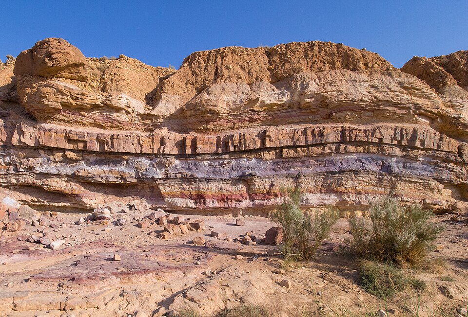

Start here ·
SVD, explained with a small picture

Singular value decomposition is a long name for a useful way of breaking an array of numbers into simpler parts. Let us start with a picture. We can understand the idea without starting with a matrix equation.
A picture is made of numbers
Zoom far enough into a digital picture and you see small squares called pixels. In a grayscale picture, each pixel has one number describing its brightness. I use 0 for black and 1 for white. Numbers between them give shades of gray. These brightness values have no physical units in this example.
The picture below is only eight pixels wide and eight pixels high. Its 64 brightness values form eight rows of numbers. That rectangular arrangement is called a matrix. SVD is a calculation we can apply to it.
Think of a rough sketch and its corrections
Suppose you draw a scene. You might begin with a rough arrangement of light and dark regions, then add corrections to make the picture closer to what you see. Something similar happens here: SVD gives us numerical patterns that we add together to recover the original picture.
I call these patterns layers in this explanation. Each layer adds to some pixels and may subtract from others. They are not transparent sheets placed over a photograph. We are adding and subtracting numbers at corresponding pixel positions.
The layers are ordered by their mathematical strength. The first makes the largest reduction in the total squared pixel error. The next makes a further reduction, and so on. A layer need not look like a familiar object. SVD does not know that this picture contains a roof or a door.
Add the layers yourself
Move the slider, or select “Play layers.” Compare the original, the rebuilt picture and the layer just added.
Loading the picture…
Original and rebuilt picture: black = 0 and white = 1, with the same scale. For the layer just added, red means add brightness, blue means subtract brightness, and white means no change. Its fixed scale is −1 to +1. The error is calculated from the numerical values, before any display adjustment.
Why are there two patterns in each layer?
Think of a curtain with a simple light-and-dark pattern. One set of numbers describes how the pattern changes from top to bottom. Another describes how it changes from left to right. Multiplying a row's number by a column's number gives the value at their intersection.
That is how one SVD layer is formed: a pattern down the rows, a pattern across the columns, and a number that sets the layer's strength. One layer has a restricted form, so it usually cannot reproduce a complicated picture by itself. Adding layers lets us describe more complicated arrangements.
This curtain comparison explains the multiplication. It does not mean that the algorithm looks for fabric, stripes or any other physical object.
The strength is like a volume control
Imagine mixing several sound tracks. A volume control changes how strongly each track contributes to the final sound. The strength assigned to an SVD layer plays a similar role. This nonnegative strength is called a singular value.
The comparison is about scaling and combining patterns. SVD does not automatically separate a recording into its instruments, and its image layers do not automatically identify physical features. A mathematically strong pattern might represent illumination, a large background region, or a feature we care about.
Keeping fewer layers is like keeping a simpler description
Suppose you describe a room to someone. A short description might give its broad arrangement. More detail makes the description closer to the actual room, but also longer. With SVD, keeping fewer layers gives a simpler numerical description of the picture.
Unlike an ordinary description, we have a precise measure of the difference: compare corresponding pixels, square their differences, and add them. For a fixed number of layers, keeping the largest singular values gives the smallest possible total squared error among matrices of that rank. Rank here is the number of independent row-and-column patterns needed to represent the matrix.
Small error does not necessarily mean that every important detail is preserved. A small pore or a thin interface may matter greatly in a material, even if it contributes little to the total pixel error. The choice of how many layers to keep depends on what we want to learn from the image.
What should you notice in this example?
Zero layers gives a black picture because we have added nothing. One layer gives a broad approximation. More layers improve the match. Four layers recover this particular picture to numerical precision. I deliberately chose a small, simple picture; four layers will not generally be enough for a microscope image.
The displayed RMSE is the root-mean-square error. It is found by averaging the squared pixel differences and taking the square root. It has the same dimensionless brightness scale as the image. A smaller value means closer numerical agreement.
The equation, if you want to see it
SVD writes the image matrix A as A = U Σ Vᵀ. A is the original array of pixel values. The columns of U contain the row-direction patterns. The rows of Vᵀ contain the column-direction patterns. The diagonal entries of Σ are the singular values, arranged from largest to smallest. All other entries of Σ are zero. The superscript T means transpose: rows and columns are exchanged.
Multiplying one column of U by its singular value and the matching row of Vᵀ gives one layer. Adding all the layers recovers A, apart from numerical rounding. In the code, I store the diagonal entries of Σ as a list named strengths rather than create a full diagonal matrix.
In this example, A and the singular values are dimensionless. U and V contain normalized, dimensionless weights. If A had physical units, its singular values would carry those units.
How does this connect to PCA?
The example above applies SVD to one image, with image rows and columns forming the matrix. In the PCA tutorial, I use a collection of images. Each whole image becomes one data row, and each pixel position becomes one feature column. I subtract the mean value of each feature before finding the directions of variation.
SVD is then a way to calculate those PCA directions. SVD itself is a matrix decomposition; PCA asks which directions explain the variation in a collection of observations. Their connection depends on centering the data and on what the matrix rows and columns represent.
There is also an important difference in the zero-component result. The SVD picture above starts from zero. In the centered PCA tutorial, reconstruction adds the mean image back, so zero principal components gives the mean image.
Next: build PCA with small pixel images
Run the small picture example in Python
I work through the calculation in six small steps below. Run them in order, or download the complete notebook or Python script. Install NumPy and Matplotlib with python -m pip install numpy matplotlib. No image downloads are needed.
1. Import the libraries
NumPy performs the array calculations. Matplotlib displays the images. I use the short names np and plt so the later lines are easier to read. Install them with python -m pip install numpy matplotlib.
import numpy as np
import matplotlib.pyplot as plt2. Create the small picture
I start with an 8 × 8 array whose brightness is 0.10. The following assignments draw the roof, walls, windows and door. In image[1, 3:5], 1 selects the second row; 3:5 selects columns 3 and 4 because the stopping index is excluded. Brightness is dimensionless, with 0 for black and 1 for white.
image = np.full((8, 8), 0.10)
image[1, 3:5] = 0.75
image[2, 2:6] = 0.75
image[3, 1:7] = 0.75
image[4:7, 2:6] = 0.50
image[4, 2] = image[4, 5] = 0.80
image[5:7, 3:5] = 0.203. Calculate the SVD
The calculation returns three arrays. U has eight rows and eight columns. strengths contains eight singular values. Vt has eight rows and eight columns. A column of U describes variation down the image rows, and the matching row of Vt describes variation across its columns. The matching singular value sets the strength. Only four layers are needed for this constructed picture.
U, strengths, Vt = np.linalg.svd(image, full_matrices=False)4. Add the layers and calculate the error
range(5) gives 0, 1, 2, 3 and 4. The slice U[:, :count] keeps every row and the first count columns. strengths[:count] keeps the corresponding strengths. Multiplication scales each retained column by its strength. The operator @ then performs matrix multiplication with the matching rows of Vt. With count = 0, the product is a zero image. I store each result in reconstructions. The RMSE compares corresponding pixels, squares their differences, averages them and takes the square root.
reconstructions = []
for count in range(5):
rebuilt = (U[:, :count] * strengths[:count]) @ Vt[:count]
reconstructions.append(rebuilt)
rmse = np.sqrt(np.mean((image - rebuilt)**2))
print(f"Layers: {count}, brightness RMSE: {rmse:.6f}")5. Check the result
np.allclose checks agreement while allowing small floating-point rounding differences. I check that four layers recover the original image. The list named errors contains mean squared errors for all five reconstructions. The next check confirms that adding a retained SVD layer does not increase this error. These checks concern this particular example.
assert np.allclose(reconstructions[4], image)
errors = [np.mean((image - rebuilt)**2) for rebuilt in reconstructions]
assert all(errors[i + 1] <= errors[i] for i in range(4))6. Display the pictures
plt.subplots(1, 5) creates one row of five plotting areas. enumerate supplies both a layer count and a plotting area. I keep vmin = 0 and vmax = 1 in every panel so their brightness values can be compared. interpolation = nearest keeps pixel edges sharp. Removing the tick labels makes this small comparison easier to see. tight_layout adjusts the spacing; show opens the figure. When running the script in a desktop window, close the figure to reach the final confirmation message.
fig, axes = plt.subplots(1, 5, figsize=(12, 3))
for count, ax in enumerate(axes):
ax.imshow(reconstructions[count], cmap="gray", vmin=0, vmax=1,
interpolation="nearest")
ax.set_title(f"{count} layers")
ax.set_xticks([])
ax.set_yticks([])
plt.tight_layout()
plt.show()
print("All picture checks passed.")Expected output: RMSE decreases from about 0.397060 with zero layers to below 10⁻¹² with four layers. The final message is “All picture checks passed.”